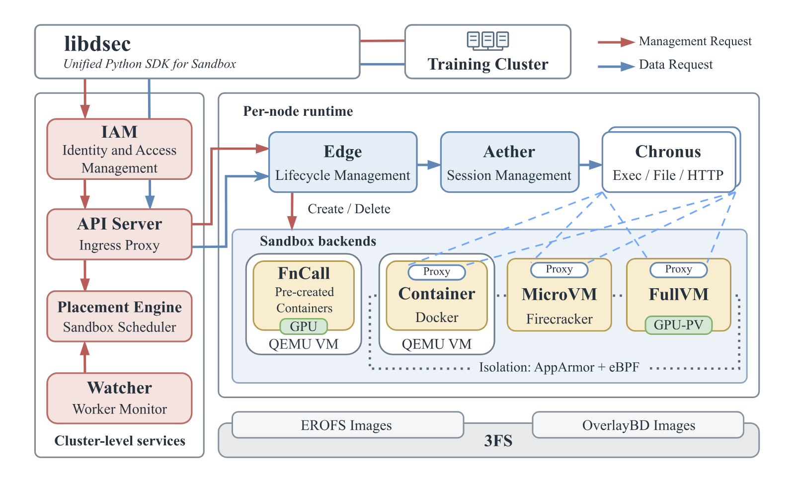 | 图1: DSec架构。每个代理转发容器或VM沙箱与平台其余部分之间的通信。FnCall走独立执行路径，不使用该代理。 |
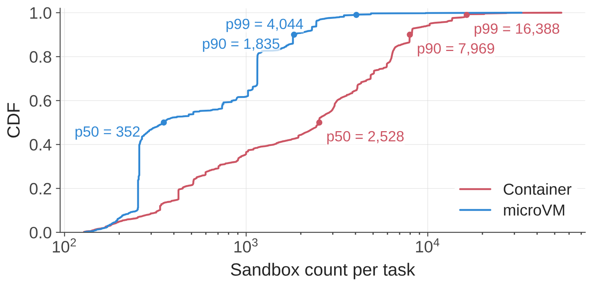 | 图2: 每个任务创建的沙箱数量分布。数据采样自2026年初的一周。 |
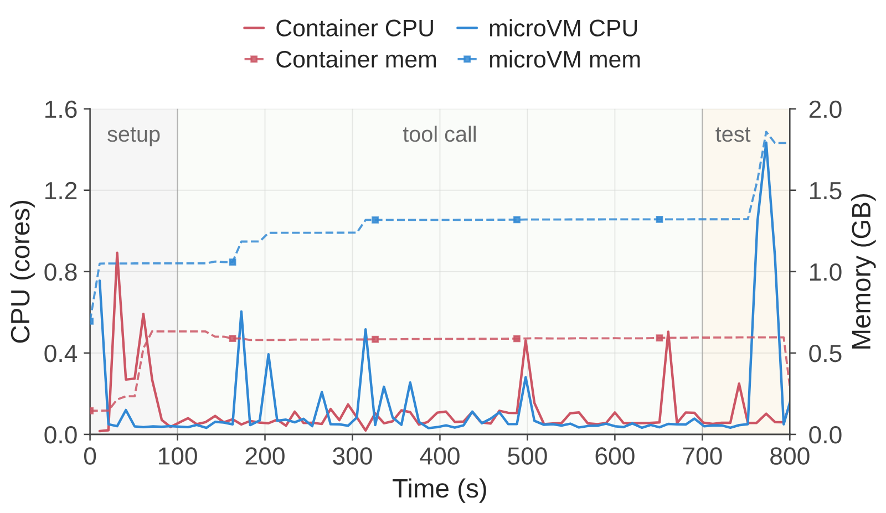 | 图3: 一次代表性的沙箱执行，包含setup、tool-call与test阶段。setup之后CPU需求间歇出现，而内存占用与累积状态持续存在。 |
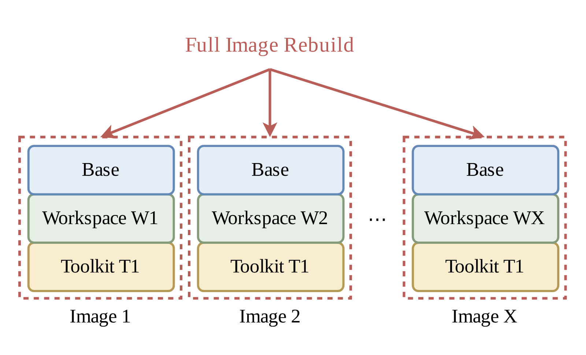 | 图4(a): 单体镜像。升级Toolkit T1时，所有嵌入T1的镜像都必须重建，即使其基础镜像与工作区未变。 |
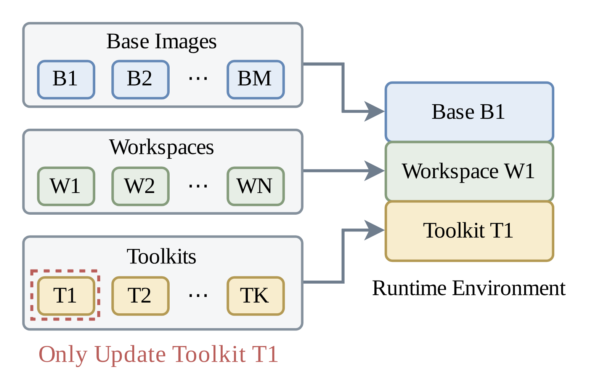 | 图4(b): 可组合环境层。只更新T1层，再与既有基础镜像层和工作区层重新组合。 |
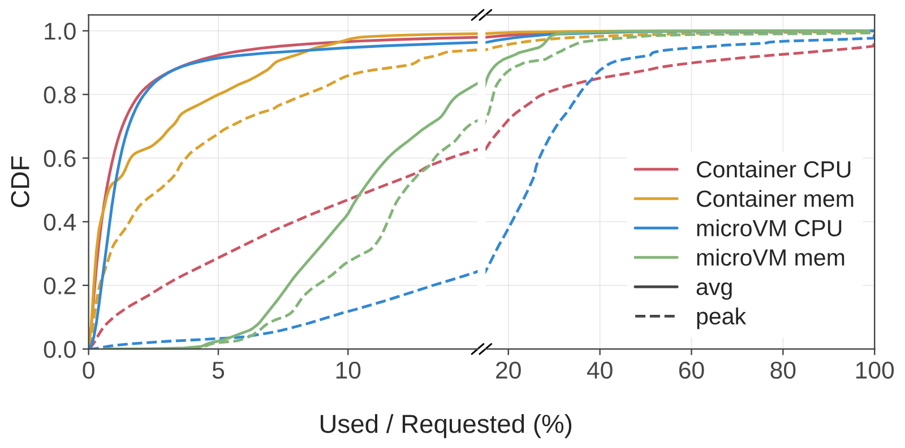 | 图5: 平均与峰值CPU、内存使用率分布，按每个沙箱申请的资源归一化。数据采样自2026年初的一周。 |
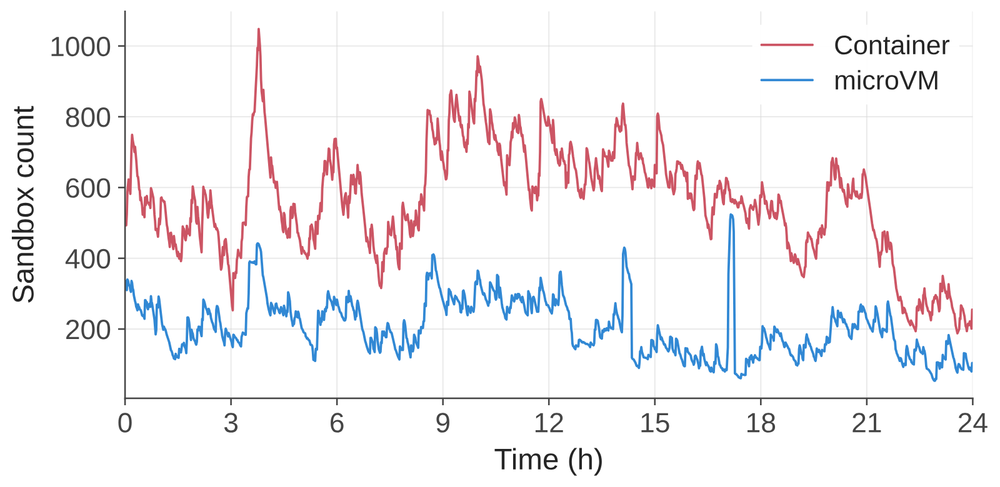 | 图6: 单个生产节点一天内活跃沙箱的数量。观测峰值为1,048个容器和524个microVM。数据采样于2026年初的一天。 |
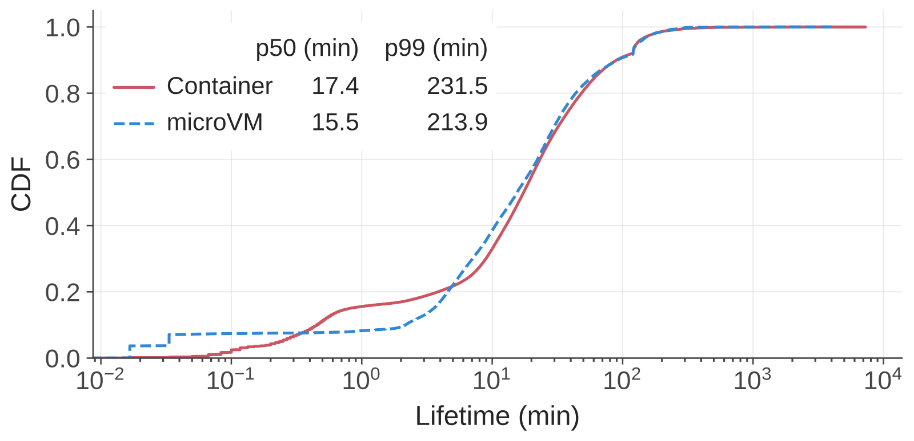 | 图7: 从30K个容器和10K个microVM采样的沙箱生命周期分布。中位生命周期分别为17.4分钟和15.5分钟，两种后端的p99生命周期均超过三小时。数据采样于2026年初的一周。 |
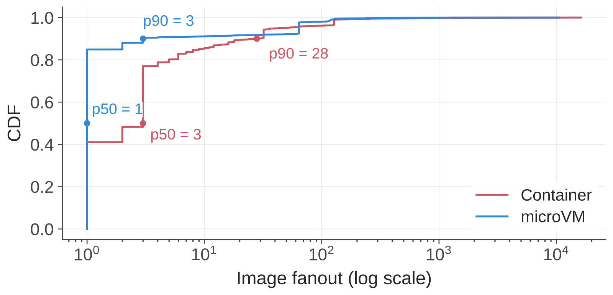 | 图8: 基于超过150万个容器和390K个microVM测得的单任务镜像扇出。任务内大多数镜像仅被少量沙箱使用。数据采样于2026年初的一周。 |
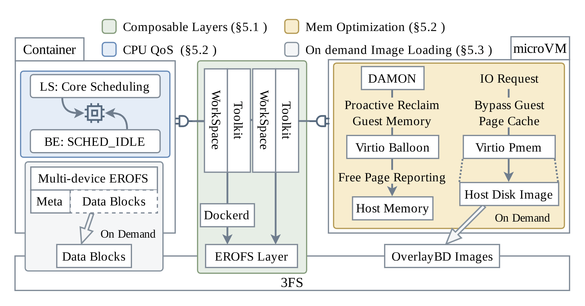 | 图9: 核心系统机制总览。LS表示延迟敏感，BE表示尽力而为。 |
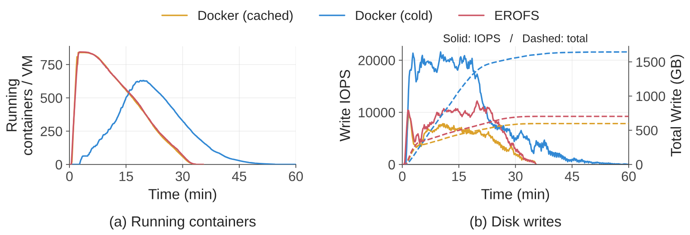 | 图10: 10节点评估集群上8,192容器突发下，按需EROFS拉取与急切Docker拉取（cold）及完全本地Docker（cached）的对比。左图: 每节点运行容器数随时间的变化。右图: 瞬时磁盘写IOPS（实线，左轴）与累计磁盘写入量（虚线，右轴）。 |
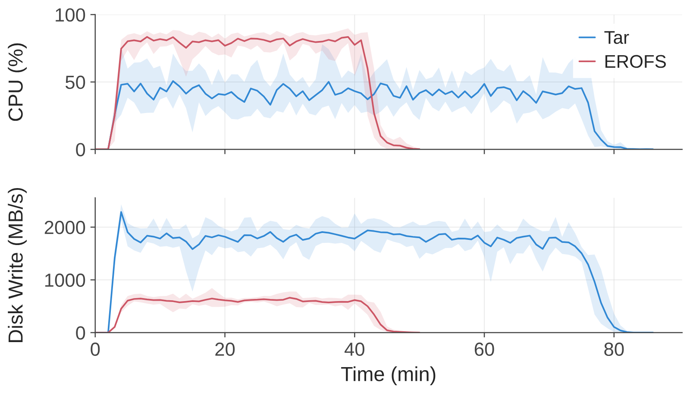 | 图11: 分别用per-sandbox tar解压和EROFS层挂载供给评估工作区时，setup阶段的CPU利用率与磁盘写吞吐。 |
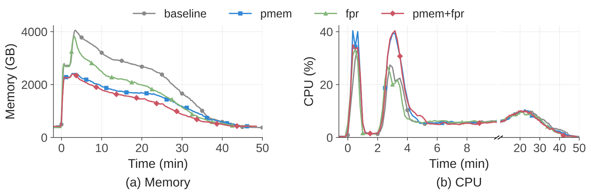 | 图12: 真实Agentic（智能体原生）RL工作负载下四种Firecracker配置的宿主机内存占用（左）与CPU利用率（右）。CPU面板对前10分钟使用放大的时间尺度，对10–50分钟区间使用压缩的时间尺度。 |
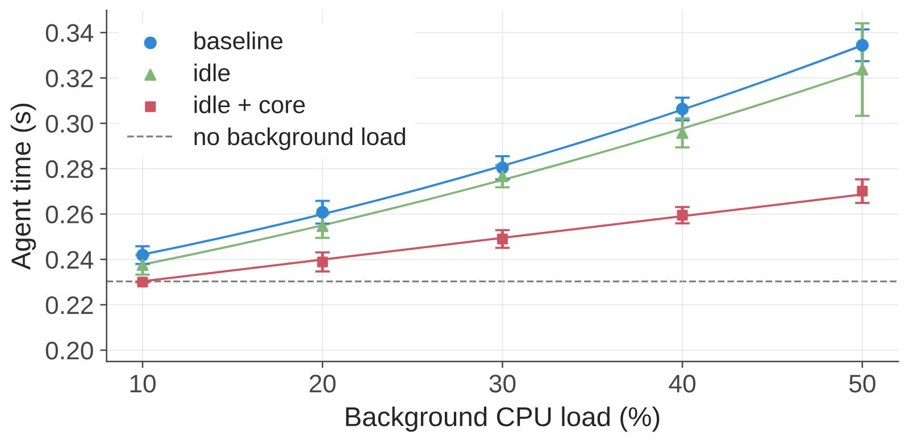 | 图13: 同节点best-effort CPU负载递增时延迟敏感Agent（智能体）的耗时，比较无保护的baseline、单独使用SCHED_IDLE以及SCHED_IDLE配合core scheduling。 |